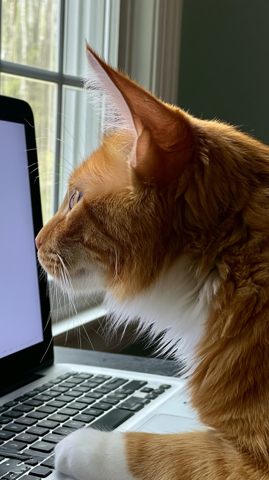
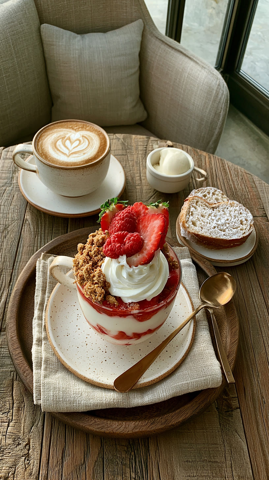
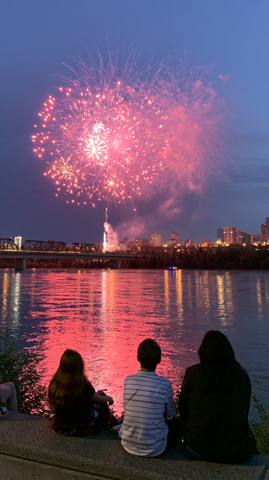
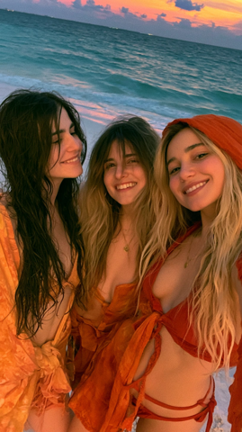
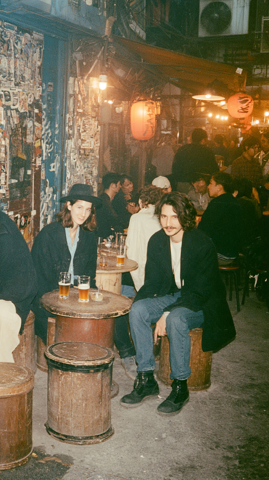
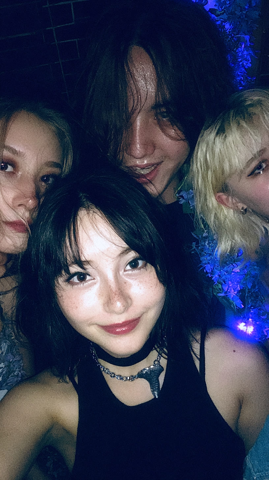
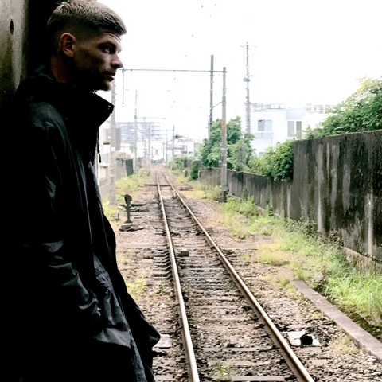
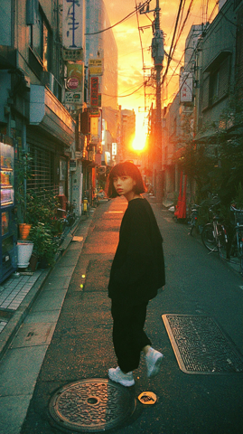

Live specimen · MapLibre + globe projection
UniverseView — 地球儀（背景）
実装エンジンそのまま：positron 淡色球 + 大気リング + 球縁白線 + 中心マーカー。ドラッグで回転 / ホイールで寄り引き。右の調整パネルで「見た目」を詰める。
 渋谷コミュニティ
渋谷コミュニティ

 神宮前コミュニティ
神宮前コミュニティ


 代々木サークル
代々木サークル



新宿グループ
Toopdbq
ドラッグ＝回転 · ホイール＝ズーム · 右ドラッグ＝傾き